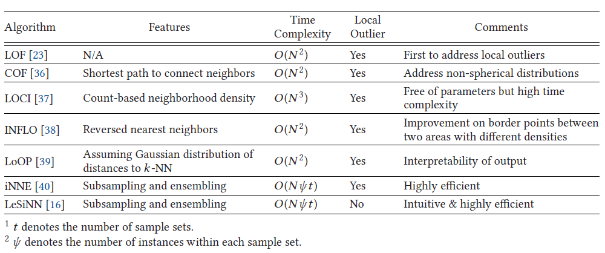
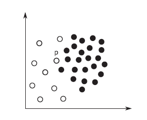
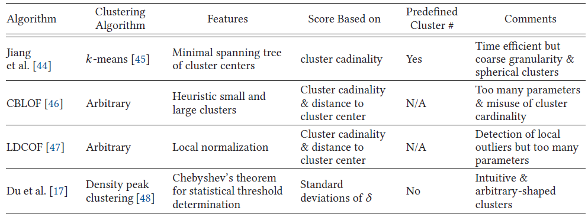

2.5k words in total, 10 minutes required. Boukerche, Azzedine, Lining Zheng, and Omar Alfandi. “Outlier Detection: Methods, Models, and Classification.” ACM Computing Surveys 53, no. 3 (May 31, 2021): 1–37. https://doi.org/10.1145/3381028. 文章较长，笔记分为多篇，上一篇主要介绍了异常检测方法的概念和分类。 近邻方法 (Proximity-based Approaches) 主要分为两种，基于最近邻 (Nearest-neighbor) 的和基于聚类 (clustering) 的。 1. 最近邻方法Neighborhood有两类: k nearest neighbors (kNN)：kNN的传统abnormality定义为 k-th distance 或者 sum of top-k distances，如[12]，这些方法中，可以使用index如KD-tree，R-tree，X-tree等进行加速，复杂度可从$O(n^2 d)$下降到 $O(n \log n d)$，但是对于高维数据 ($d \gg 0$) 扩展性并不高 a neighborhood within a pre-specified radius (density): 传统abnormality定义为近邻点的数量 这些方法都是global的，考虑到不同区域变化的density，往往和real-life semantics有偏差。以下介绍一些local方法。 1.1 LOF (Local outlier factor)Local方法的代表是LOF[1]，考虑了局部的各实例的density的比值 (The LOF score for a data instance is based on the average ratio of the instance’s neighbor’s density to that instance’s density)。 首先计算给定点$p$的LRD (local reachability density)： 其中$d_k(p,o) = \max \{ \text{k-distance}(o), distance(p,o) \}$ (k-distance即kth-nearest-neighbor distance)。 The local reachability density is basically the reciprocal of the average distance to the neighbors unless there exist some neighbors that are “sufficiently close.” 从这个解释看出，$d_k(p,o)$取max的意义就是为了避免这些“sufficiently close”的情况出现。 最终，LOF的计算公式如下： 由于通常outliers的neighbors的density会更大（即LRD更大），那么outliers的LOF也会更大。 1.2 LOF的延续和改进型各LOF改进的最近邻方法一览 1.2.1 Connectivity-based Outlier Factor (COF)为了解决非球形分布 (non-spherical distributions)，“链接距离” (chaining distance)，可以看作是连接k个邻居和数据实例本身的最短路径[2]。 1.2.2 Local Correlation Integral (LOCI) 对于数据点$p$，具有给定半径$r$的MDEF（Multi-Granularity Deviation Factor，多粒度偏差因子）[3]等于 1 减去$p$的局部密度与 $p$的$r$-邻域中点的平均局部密度之比。 MDEF 表示数据点在局部密度方面偏离其邻居的程度。 另一个相关的度量是 $\delta_{MDEF}$，它是$r$邻域中点的局部密度的标准偏差，由$r$-邻域中的平均局部密度归一化。 MDEF 在任何迭代中大于$\delta_{MDEF}$ 的三倍，数据点被标记为异常值。 算法复杂度高，因此aLOCI使用空间划分网格来近似邻域，从而实现几乎线性的性能。 1.2.3 Influenced Outlierness (INFLO) 反向最近邻集 (reverse k-NN) 结合 k-NN 计算异常值分数[4]。 解决 LOF 的局限性，即 LOF 无法对具有显着不同密度的集群在边界上的实例进行适当评分 (参见下图，点$p$在稀疏和非稀疏的区域的边界上，使用LOF仅会考虑来自于非稀疏的区域的neighbors，从而产生很高的LOF，而INFLO会同时考虑reserse k-NN，从而得到更加合理的估算) INFLO图示 1.2.4 Local Outlier Probability (LoOP) 输出一个概率，表明数据点是异常值的可能性[5]。 LoOP 在计算数据点的局部密度的方式上与 LOF 不同。 假设数据点$p$位于其邻域的中心，到其 k-NN 的距离服从半高斯half-Gaussian分布 (距离始终为非负数)。 1.2.5 isolation using Nearest Neighbour Ensemble (iNNE) 基于亚采样subsampling和集成ensemble[6]。 对于样本集 $S$ 中的样本实例 $c$，构建超球面 $B(c)$ (以 $c$ 为中心，半径 $r(c)$ 作为 $c$ 与其最近的距离 $S$ 以内的邻居)。 Isolation score for a point $p$$I(P) = 1 - \frac{r(nn(minS(x)))}{r(minS(x))}$其中$minS(x)$是$x$所在的具有最小超球面的样本实例，$nn(c)$是$c$在$S$内的NN。 数据点落在任何样本实例的隔离超球面内，Isolation score将小于 1。 选择具有最小半径的样本实例作为 x 的代理。 1.2.6 LeSiNN 和 iNNE 一样：也是基于 subsampling + (ensemble，其保证离群点检测器的稳定性)[7]。 数据点$p$关于样本集$S$的异常值分数被简单地定义为$p$和$p$在$S$中的最近邻居之间的距离。 1.3 最近邻方法总结 基于最近邻的方法的优点是对异常值的粒度更精细相比于基于聚类的方法。 但是计算复杂度高，涉及到pairwise distance computation。 $k$的选择对性能有显着影响。 但是对于不同的方法和数据集，$k$的最佳选择会有所不同。 过大的$k$会导致异常值和正常点之间的区别较弱。 过小的$k$会导致对邻近密度的估计不可靠。 使用子采样（subsampling）是将时间复杂度降低到线性的好方法。 subsampling与ensemble的结合还可以提供可靠的性能。 然而，新的问题是决定合适的样本大小和集合大小（越大的数据，emsemble的size应该越大）。 2. 基于聚类的方法一般分为两个步骤： 聚类 分析和聚类结果的偏差程度 (the degree of deviation) 简单说，outlier和cluster是互补关系，即不属于任何cluster的可以被认定为一个outlier。除此之外，还有两种度量方式：一是基于到cluster的距离，其假设就是离cluster越远，越异常；二是基于cluster的基数 (cardinality)，即正常的cluster是dense and large，而cluster of outliers是sparse and small。 基于1.3的总结分析，可以知道聚类方法的复杂度相对更低，但是提供更加粗粒度的分析和计算能力。 基于聚类的异常检测方法 2.1 K-means+Minimal Spanning Tree (最小生成树) 对K-means进行改进：设定cluster number的上界；如果一个点和已有的cluster的距离“很远”，则新设立一个cluster[8]。 两种距离被使用：1) cluster间的距离的最小值，在发生cluster的变化时被更新；2) 点和最近的cluster的距离。如果第一种距离不小于第二种距离，则创建新的cluster。 当cluster的数量上界超出时，最短距离的两个cluster center会被合并。这个改进的K-means也需要多个轮次的迭代，以最小化所有点到其cluster center的距离的和（即k-median objective）。 在outlier detection阶段，最小生成树被构建，cluster centers作为nodes，他们的距离最为edge weights。最长的edges被不断移除直到subtree的个数变成k。最小基数的subtrees中的点被认为是outliers。 2.2 Cluster-based Local Outlier Factor (CBLOF)首先将聚类按照基数由大到小排列：$\{C_1, \ldots, C_k \}$，并找到一个边界$C_b$满足 (1) $\sum_{i=1}^b |C_i| \geq \alpha |D|$; (2) $|C_b|/|C_{b+1}| \geq \beta$$\alpha$和$\beta$是两个超参数，$C_b$是大簇和小簇的分界。 在outlier分析阶段，计算CBLOF[9]，如下 这里的假定是更大的基数意味着更小的density——并不一定成立。因此unweighted-CBLOF被提出[10]：简单地，将基数$|C_i|$从CBLOF的计算中去除，能得到实践中更好的结果。这里相当于把local detector变成了global detector。 2.3 Local Density Cluster-Based Outlier Factor (LDCOF)在unweighted-CBLOF之上，用了一个cluster内部的点的平均距离来正规化，从而恢复到local detector的特性[11]。 2.4 density peak clustering两个假设[11]： cluster centers have higher local density than surrounding data points cluster centers have a comparatively large distance to other data points with higher local density 简单解读一下：强者都有一堆小弟，强者都各自占山为王敬而远之。 数据点的局部密度$\rho$ 定义为截止半径内的相邻数据点的数量。 一个数据点的$\delta$ 是它到另一个具有更高局部密度的数据点的最小距离。 在聚类过程中，高$\delta$和高$\rho$的数据点首先被分配聚类中心，然后每个剩余的数据点属于同一个集群，其中最近的数据分配具有较高局部密度的点。 在聚类阶段之后，此处的异常值检测方法计算每个聚类内$\delta$ 的均值和标准差。 切比雪夫定理用于确定异常值的偏差阈值。 继续阅读下一篇。 扩展阅读1.Markus M. Breunig, Hans-Peter Kriegel, Raymond T. Ng, and Jörg Sander. 2000. LOF: Identifying density-based local outliers. In ACM Sigmod Record, Vol. 29., 93–104. ↩2.Jian Tang, Zhixiang Chen, AdaWai-Chee Fu, and David W. Cheung. 2002. Enhancing effectiveness of outlier detections for low density patterns. In PAKDD, 535–548. ↩3.Spiros Papadimitriou, Hiroyuki Kitagawa, Phillip B. Gibbons, and Christos Faloutsos. 2003. Loci: Fast outlier detection using the local correlation integral. In ICDE, 315–326. ↩4.Wen Jin, Anthony K. H. Tung, Jiawei Han, and Wei Wang. 2006. Ranking outliers using symmetric neighborhood relationship. In PAKDD, 577– 593. ↩5.Hans-Peter Kriegel, Peer Kröger, Erich Schubert, and Arthur Zimek. 2009. LoOP: Local outlier probabilities. In CIKM, 1649–1652. ↩6.Tharindu Bandaragoda. 2014. Efficient anomaly detection by isolation using nearest neighbour ensemble. In ICDM Workshops, 698–705. ↩7.Guansong Pang, Kai Ming Ting, and David Albrecht. 2015. LeSiNN: Detecting anomalies by identifying least similar nearest neighbours. In ICDM Workshops, 623–630. ↩8.Mon-Fong Jiang, Shian-Shyong Tseng, and Chih-Ming Su. 2001. Two-phase clustering process for outliers detection. Pattern Recogn. Lett. 22, 6–7 (2001), 691–700. ↩9.Zengyou He, Xiaofei Xu, and Shengchun Deng. 2003. Discovering cluster-based local outliers. Pattern Recogn. Lett. 24, 9–10 (2003), 1641–1650. ↩10.Mennatallah Amer and Markus Goldstein. 2012. Nearest-neighbor and clustering based anomaly detection algorithms for rapidminer. In RCOMM, 1–12. ↩11.Haizhou Du, Shengjie Zhao, Daqiang Zhang, and Jinsong Wu. 2016. Novel clustering-based approach for local outlier detection. In INFOCOM Workshops. 802–811. ↩12.E. Knorr and R. Ng. Algorithms for Mining Distance-Based Outliers in Large Datasets. 1998. In VLDB, 392–403. ↩ ← Previous Post Next Post→ Table of Contents 1. 最近邻方法1.1 LOF (Local outlier factor)1.2 LOF的延续和改进型1.2.1 Connectivity-based Outlier Factor (COF)1.2.2 Local Correlation Integral (LOCI)1.2.3 Influenced Outlierness (INFLO)1.2.4 Local Outlier Probability (LoOP)1.2.5 isolation using Nearest Neighbour Ensemble (iNNE)1.2.6 LeSiNN1.3 最近邻方法总结2. 基于聚类的方法2.1 K-means+Minimal Spanning Tree (最小生成树)2.2 Cluster-based Local Outlier Factor (CBLOF)2.3 Local Density Cluster-Based Outlier Factor (LDCOF)2.4 density peak clustering扩展阅读